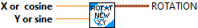
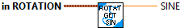
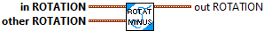

Constructs a Rotation2d with the given radian value. The x and y don't have to be normalized.
Parmeters:
- value - The value of the angle in radians.
Returns
- rotation data structure

Constructs a Rotation2d with the given angle value in degrees.
Parmeters:
- value - The value of the angle in degrees..
Returns
- rotation data structure

Constructs a Rotation2d with the given angle value in rotations.
Parmeters:
- value - The value of the angle in rotations.
Returns
- rotation data structure

Constructs a Rotation2d with the given x and y (cosine and sine) components. X and Y don't have to be normalized.
Parameters:
- X -The x component or cosine of the rotation.
- Y - The y component or sine of the rotation.
Returns:
Rotation data structure

Divides the current rotation (angle) by a scalar.
Parameters:
- IN ROTATION - This ROTATION data structure
- SCALAR - The value to divide the rotation by.
Returns:
- OUT ROTATION - THe new ROTATION data structure.

Checks equality between this Rotation2d and another object.
Parameters:
- in ROTATION - This Rotation data structure
- other ROTATION - The other Rotation to compare
Returns:
- equals - Whether the two objects are equal or not.

Returns the angle, sine, and cosine of the rotation.
Parameters:
- in ROTATION - This ROTATION data structure
Returns:
- Angle - The angle of the ROTATION (radians)
- Cosine of the ROTATAION
- Sine of the ROTATAION

Returns the cosine of the rotation.
Parameters:
- in ROTATION - This ROTATION data structure
Returns:
- Cosine of the ROTATAION

Get the angle in degrees from the rotation.
Parameters:
- ROTATION - The rotation data structure
Results:
- Angle in degrees.

Get the angle in radians from the rotation.
Parameters:
- ROTATION - The rotation data structure
Results:
- Angle in radians.

Get the angle in degrees from the rotation.
Parameters:
- ROTATION - The rotation data structure
Results:
- Angle in rotations.

Returns the sine of the rotation.
Parameters:
- in ROTATION - This ROTATION data structure
Returns:
- Sine of the ROTATAION

Returns the tanget of the rotation.
Parameters:
- in ROTATION - This ROTATION data structure
Returns:a
- Tangent of the ROTATAION

Interpolate between 2 rotations
Parameters:
- in ROTATION - This rotation data structure
- EndValue ROTATION - The end value rotation
- T -- Value between 0 and 1.
Returns:
- Interpolated ROTATION - The interpolated rotation.

Subtracts the new rotation from the current rotation and returns the new rotation.
For example, Rotation2d.fromDegrees(10) - Rotation2d.fromDegrees(100) = Rotation2d{-pi/2}
Parameters:
- in ROTATION - This rotation data structure
- other ROTATION - The rotation to subtract.
Returns:
- out ROTATION - The difference between the two rotations.

Adds two rotations together, with the result being bounded between -pi and pi.
For example, Rotation2d.fromDegrees(30) + Rotation2d.fromDegrees(60) = Rotation2d{-pi/2}
This function is the same as RotateBy.
Parameters:
- IN ROTATION - This rotation data structure
- OTHER ROTATION - The rotation to add.
Returns:
- OUT ROTATION - The sum of the two rotations.

Adds the new rotation to the current rotation using a rotation matrix.
The matrix multiplication is as follows:
[cos_new] [other.cos, -other.sin][cos]
[sin_new] = [other.sin, other.cos][sin]
value_new = atan2(cos_new, sin_new)
This is the same as Plus.
Parameters:
- IN ROTATION - This ROTATION data structure
- OTHER ROTATION - The rotation to rotate by
Returns:
- OUT ROTATION - The new rotated Rotation2d.

Multiplies the current rotation (angle) by a scalar.
Parameters:
- IN ROTATION - This ROTATION data structure
- SCALAR - The value to multiiply the rotation by.
Returns:
- OUT ROTATION - THe new ROTATION data structure.

Takes the inverse of the current rotation. This is simply the negative of the current angular value.
Parameters:
- IN ROTATION - This ROTATION data structure
Results:
- OUT ROTATION - The negated ROTATION data structure.